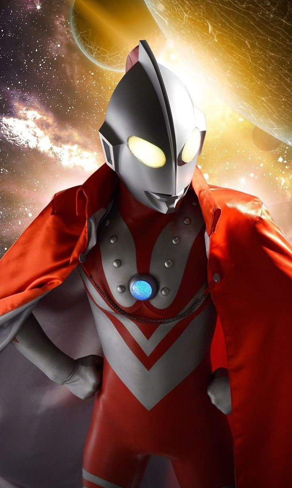

About Zoffy
Unlike the other Ultra Brothers, Zoffy is the commander of the Inter Galactic Defense Force and does not have a permanent human host or his own TV series. He first arrived on Earth to retrieve the original Ultraman after his defeat by Zetton, and since then, he has appeared as a powerful mentor and reinforcement during the planet's greatest crises. He is easily identified by the Star Marks on his chest—honorable medals representing his bravery in battle—and is feared by enemies for his M87 Beam, which is recorded as the single most powerful heat-ray attack among the Ultra Brothers.